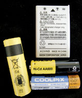

Module 4—Batteries and Balance
 Reflect on the Big Picture
Reflect on the Big Picture

In Lesson 1 you completed an audit of the cells used in your home. In this lesson you investigated common types of consumer cells.
RBP 1. Retrieve your “battery” audit and classify the cells you counted into the following categories: rechargeable and non-rechargeable.
Many cells and batteries are discarded improperly. In this lesson you learned that some of the components of various types of cells can be toxic or may cause harm to the environment.
RBP 2. Research the following types of commonly used cells and batteries, and identify concerns about their disposal:
- alkaline dry cell (zinc-manganese oxide)
- nickel-cadmium
- nickel-metal hydride
- lithium ion
- lead-acid
Prepare a poster, information pamphlet, podcast, or other form of communication to promote safer practices for the disposal of used cells and batteries in your local area.
Discuss
Place a copy of your poster, pamphlet, or presentation in the discussion area for your class. Review the presentations of other students in your class, and provide constructive feedback to your classmates in the following areas:
- Is the scientific information correct?
- Does the presentation address concerns about the disposal of different types of spent cells?
- Are effective communication strategies used? How might the presentation of information be improved?
Review the feedback you receive on your own presentation, and revise your presentation. Submit your final presentation to your teacher.
 Module 4: Lesson 2 Assignment
Module 4: Lesson 2 Assignment
Retrieve your copy of the Module 4: Lesson 2 Assignment, and complete Part 3. Submit your completed assignment to your teacher.